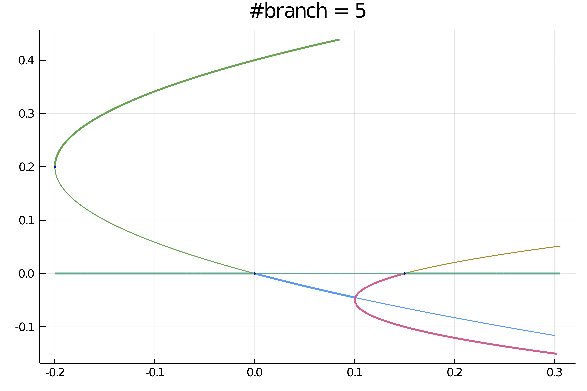
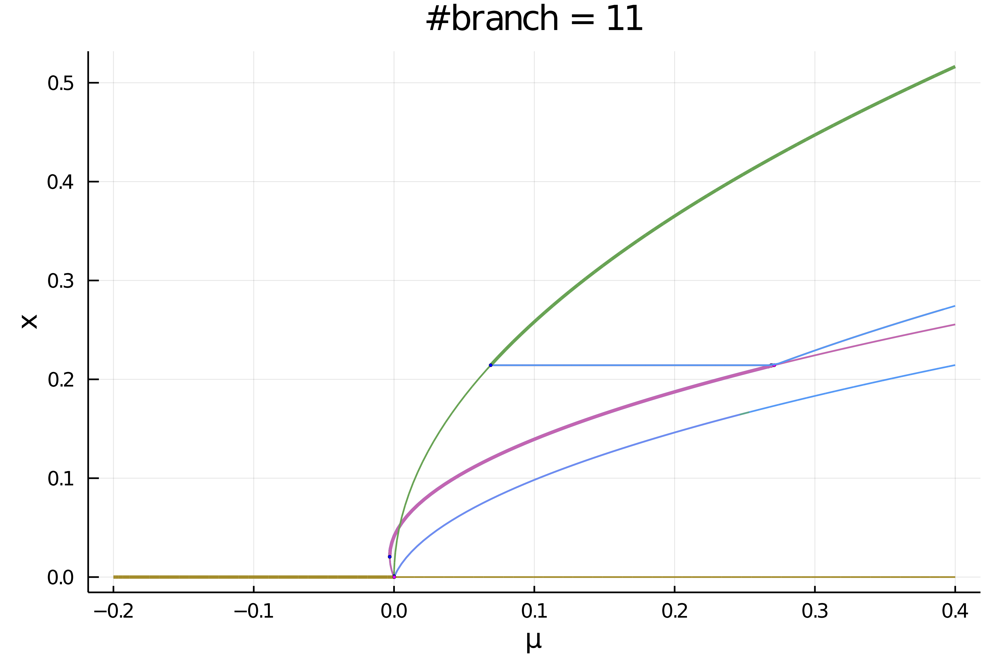

Automatic Bifurcation diagram computation
This feature is still experimental. It has not been tested thoroughly.
Thanks to the functionality presented in this part, we can compute the bifurcation diagram of a system recursively and fully automatically. More precisely, the function bifurcationdiagram allows to:
- compute a branch $\gamma$ of equilibria
- detect all bifurcations on the branch
- recursively compute the branches emanating from branch points on $\gamma$.
Pitfalls
For now, there is no way to decide if two branches $\gamma_1,\gamma_2$ are the same. As a consequence:
- there is no loop detection. Hence, if the branch $\gamma$ has a component akin to a circle, you may experience a large number of branches
- if the bifurcation diagram itself has loops (see example below), you may experience a large number of branches
The whole diagram is stored in RAM and you might be careful computing it on GPU. We'll add a file system for this in the future.
Basic example with simple branch points
using Revise, Plots
using BifurcationKit, Setfield, ForwardDiff
const BK = BifurcationKit
function FbpSecBif(u, p)
return @. -u * (p + u * (2-5u)) * (p -.15 - u * (2+20u))
end
D(f, x, p, dx) = ForwardDiff.derivative(t -> f(x .+ t .* dx, p), 0.)
dFbpSecBif(x,p) = ForwardDiff.jacobian( z-> FbpSecBif(z,p), x)
d1FbpSecBif(x,p,dx1) = D((z, p0) -> FbpSecBif(z, p0), x, p, dx1)
d2FbpSecBif(x,p,dx1,dx2) = D((z, p0) -> d1FbpSecBif(z, p0, dx1), x, p, dx2)
d3FbpSecBif(x,p,dx1,dx2,dx3) = D((z, p0) -> d2FbpSecBif(z, p0, dx1, dx2), x, p, dx3)
jet = (FbpSecBif, dFbpSecBif, d2FbpSecBif, d3FbpSecBif)
# options for Krylov-Newton
opt_newton = NewtonPar(tol = 1e-9, verbose = false, maxIter = 20)
# options for continuation
opts_br = ContinuationPar(dsmin = 0.001, dsmax = 0.05, ds = 0.01, pMax = 0.4, pMin = -0.5, detectBifurcation = 3, nev = 2, newtonOptions = opt_newton, maxSteps = 100, nInversion = 4, tolBisectionEigenvalue = 1e-8, dsminBisection = 1e-9)
diagram = bifurcationdiagram(jet...,
# initial point and parameter
[0.0], -0.2,
# specify the continuation parameter
(@lens _),
# very important parameter. This specifies the maximum amount of recursion
# when computing the bifurcation diagram. It means we allow computing branches of branches
# at most in the present case.
2,
(args...) -> setproperties(opts_br; pMin = -1.0, pMax = .3, ds = 0.001, dsmax = 0.005, nInversion = 8, detectBifurcation = 3,dsminBisection =1e-18, tolBisectionEigenvalue=1e-11, maxBisectionSteps=20, newtonOptions = (@set opt_newton.verbose=false));
printSolution = (x, p) -> x[1])This gives
julia> diagram
Bifurcation diagram. Root branch (level 1) has 4 children and is such that:
Branch number of points: 76
Branch of Equilibrium
Bifurcation points:
(ind_ev = index of the bifurcating eigenvalue e.g. `br.eig[idx].eigenvals[ind_ev]`)
- # 1, bp point around p ≈ 0.00000281, step = 31, eigenelements in eig[ 32], ind_ev = 1 [converged], δ = ( 1, 0)
- # 2, bp point around p ≈ 0.15000005, step = 53, eigenelements in eig[ 54], ind_ev = 1 [converged], δ = (-1, 0)You can plot the diagram like plot(bdiag; putbifptlegend=false, markersize=2, plotfold=false, title = "#branches = $(size(bdiag))") and it gives:

Example with nonsimple branch points
To show the ability of the branch switching method to cope with non simple branch points, we look at the normal form of the Pitchfork with D6 symmetry which occurs frequently in problems with hexagonal symmetry. You may want to look at Automatic diagram of 2d Bratu–Gelfand problem (Intermediate) for a non trivial example of use.
using Revise, Plots
using BifurcationKit, Setfield, ForwardDiff, LinearAlgebra
const BK = BifurcationKit
norminf = x -> norm(x, Inf)
function FbpD6(x, p)
return [ p.μ * x[1] + (p.a * x[2] * x[3] - p.b * x[1]^3 - p.c*(x[2]^2 + x[3]^2) * x[1]),
p.μ * x[2] + (p.a * x[1] * x[3] - p.b * x[2]^3 - p.c*(x[3]^2 + x[1]^2) * x[2]),
p.μ * x[3] + (p.a * x[1] * x[2] - p.b * x[3]^3 - p.c*(x[2]^2 + x[1]^2) * x[3])]
end
# computation of the differentials
D(f, x, p, dx) = ForwardDiff.derivative(t -> f(x .+ t .* dx, p), 0.)
d1FbpD6(x,p,dx1) = D((z, p0) -> FbpD6(z, p0), x, p, dx1)
d2FbpD6(x,p,dx1,dx2) = D((z, p0) -> d1FbpD6(z, p0, dx1), x, p, dx2)
d3FbpD6(x,p,dx1,dx2,dx3) = D((z, p0) -> d2FbpD6(z, p0, dx1, dx2), x, p, dx3)
jet = (FbpD6, (x, p) -> ForwardDiff.jacobian(z -> FbpD6(z, p), x), d2FbpD6, d3FbpD6)
pard6 = (μ = -0.2, a = 0.3, b = 1.5, c = 2.9)
# newton options
opt_newton = NewtonPar(tol = 1e-9, maxIter = 20)
# continuation options
opts_br = ContinuationPar(dsmin = 0.001, dsmax = 0.05, ds = 0.01, pMax = 0.4, pMin = -0.5, detectBifurcation = 2, nev = 2, newtonOptions = opt_newton, maxSteps = 100, nInversion = 4, tolBisectionEigenvalue = 1e-8, dsminBisection = 1e-9)
bdiag = bifurcationdiagram(jet..., zeros(3), pard6, (@lens _.μ), 3,
(args...) -> setproperties(opts_br; pMin = -0.250, pMax = .4, ds = 0.001, dsmax = 0.005, nInversion = 4, detectBifurcation = 3, dsminBisection =1e-18, tolBisectionEigenvalue=1e-11, maxBisectionSteps=20, newtonOptions = (@set opt_newton.verbose=false));
printSolution = (x, p) -> norminf(x),
plot = false, verbosity = 0, normC = norminf)We can now plot the result:
plot(bdiag; putbifptlegend=false, markersize=2,plotfold=false);title!("#branch = $(size(bdiag))")